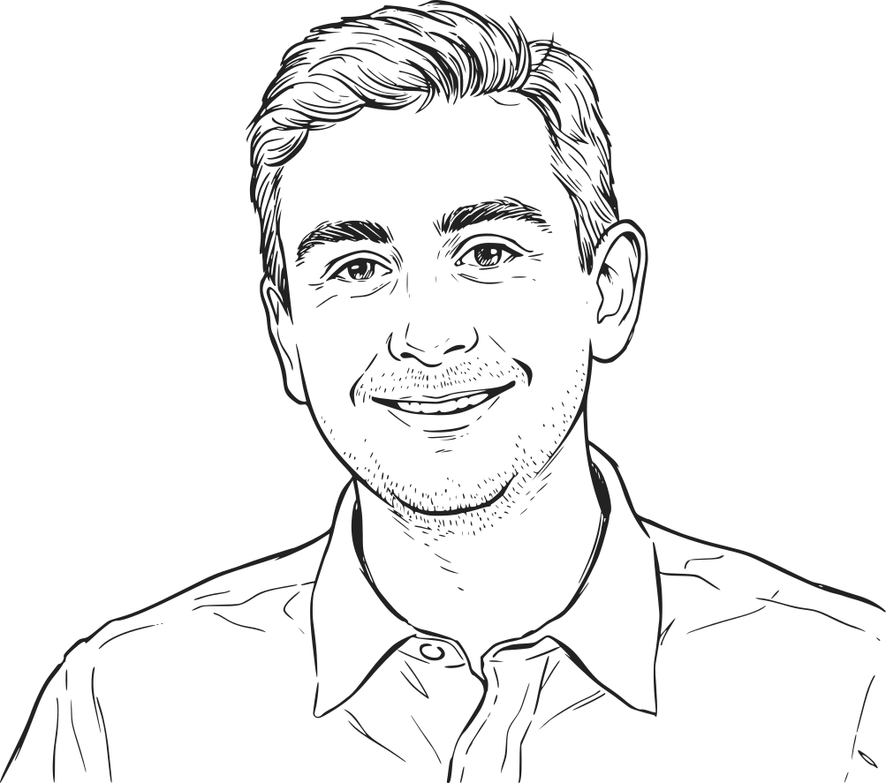

Digital design grounded in research, systems, and accessibilityDigitalt design forankret i research, systemer og tilgængelighed
I am a Digital Designer (Cand.IT) based in Aarhus, Denmark, with a passion for creating structured, scalable, and inclusive digital experiences. For the past three years, I have been working within the healthcare sector, turning complex legacy systems into modern, user-centric web solutions — starting with field research and user interviews to understand how people actually work, then translating those findings into interfaces. I'm strongest in Figma, where I build and maintain the design systems that keep that work consistent and scalable, and I make sure every component is not only visually polished but also fully accessible and WCAG 2.2 compliant. Jeg er digital designer (cand.it.) baseret i Aarhus med en passion for at skabe strukturerede, skalerbare og inkluderende digitale oplevelser. De seneste tre år har jeg arbejdet inden for sundhedssektoren, hvor jeg omdanner komplekse legacy-systemer til moderne, brugercentrerede webløsninger — med udgangspunkt i feltresearch og brugerinterviews, der afdækker, hvordan folk faktisk arbejder, før jeg omsætter det til interfaces. Min styrke ligger i Figma, hvor jeg opbygger og vedligeholder de designsystemer, der holder arbejdet konsistent og skalerbart, og sikrer, at hver komponent ikke kun er visuelt poleret, men også fuldt tilgængelig og WCAG 2.2-kompatibel.
downloadResumeCV